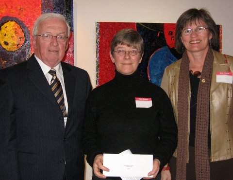
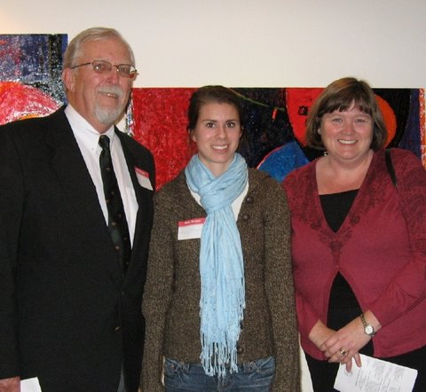
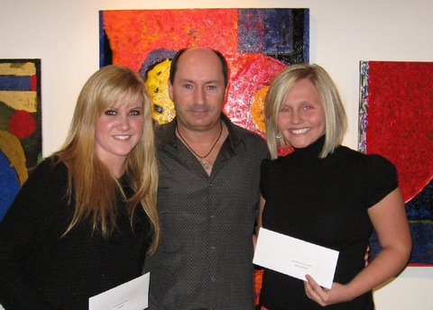

No. 77 December 2, 2007

Norman Carruthers with Wendy MacDonald and Shirley Jay representing PEI Home and School Assoc

Rogers Bell with Hilary Hanson and Nancy Connolly

Lisa Beck, David Carver and Jessica Fleming
Awards 2007
A
reception was held at the Arts
Guild on November 14, 2007 to
announce Foundation awards for 2007. Grants totaling $20,000 were
awarded to:
Lowell Phillips Scholarship Fund - Kali Esther Wells $ 500
Summerside-Natick International Friendship
Hockey Fund - Bethany MacKay $ 250
Orin Carver Scholarship Fund -Jessica Fleming and $2,500
-Lisa Beck $2,500
Joan Auld Scholarship Fund (To be awarded in December)
Lorne & Ruby Bonnell Scholarship- Vanessa Lutz-Collins $ 900
T Arthur Dawson Scholarship Fund $ 700
C. Gordon Lord Scholarship Fund $ 150
Glendenning Family Fund - Miramichi Regional School $ 200
Dr. Donald K. Taylor Memorial Fund - Kevin Clow $ 500
J. Melville Campbell Fund - Summerside Boys & Girls $ 300
Souris Fund - Souris High School $ 500
Jessie Drummond Public Speaking Award Fund
- Bedeque North Pastoral Charge $ 88
Hesta MacDonald Legacy Fund
- Queen Charlotte Junior High School $ 200
David A. MacKay Endowment Fund
- CPR Instructor Training $4,000
Cumberland-Rocky Point WI Legacy Fund
- Westwood School $ 600
- Eliot River School $ 600
Beach Tennis Club Trust Fund - Will Connolly $ 200
- Hillary Hansen $ 200
Southeast Environmental Association $ 250
P.E.I. Rape & Sexual Assault $ 250
Open Door Ministries $ 250
Citizen Advocacy $ 250
P.E.I. Home & School $ 250
P.E.I. Kiwanis Music Festival $ 500
Singing Strings $ 500
Catholic Family Services Bureau $ 750
Students Against Violence Everywhere $1,000
Pat & the Elephant $1,050
The
Foundation gratefully acknowledges the event sponsor, John Ives and
Century 21 Colonial Realty, and the many donors to
Foundation
endowments.
__________________________________
The Community Foundation News is an informal newsletter, in electronic form only, edited and published by, and at the whim of, Don Glendenning. Think of it as a letter from a friend. Forward this to others who may be interested. For further information, check our website, www.cfpei.ca or Email me at: don@glendenning.net